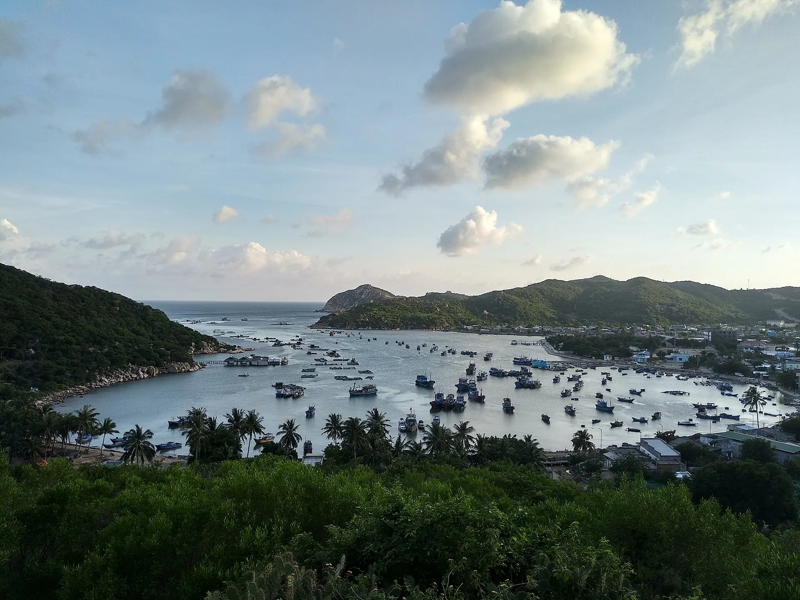

반깐
흙 틀에 구운 쌀떡에 달걀·오징어·새우를 올려 생선 조림 소스와 풋망고에 찍어요.

닌투언은 베트남에서 가장 햇볕과 바람이 강한 곳으로, 맑은 빈히 만, 누이추아 국립공원을 가로지르는 해안 도로, 남끄엉 모래 언덕, 포도가 주렁주렁 열린 포도밭이 있습니다. 또한 오래된 포끌롱가라이 탑, 바우쭉 도자기 마을, 화려한 까떼 축제가 있는 참족 문화의 중심지입니다.
날씨 불러오는 중...
달을 눌러 여행하기 좋은 때인지 확인하세요
School holidays make beaches their busiest of the year.
Travel midweek and book early for better prices.
The seventh month of the Cham calendar (usually September–October) – costume processions, music and dance at the Po Klong Garai and Po Rome towers.
Check the official dates first; respect the rites and don't cut into the procession.
음력 축제는 해마다 날짜가 바뀝니다 – 출발 전에 공식 일정을 확인하세요.
흙 틀에 구운 쌀떡에 달걀·오징어·새우를 올려 생선 조림 소스와 풋망고에 찍어요.
포도밭에서 바로 먹는 달콤한 판랑 포도, 포도주·포도 시럽·건포도는 선물로.
건조한 초원에서 방목한 양을 숯불에 굽거나 약초 전골로.
참고용 사진: 숯불구이 고기Bánh căn with egg or squid and fish dipping sauce
Trung tâm Phan Rang – Tháp Chàm 업데이트 2026.10 신고Grilled lamb and lamb hotpot
Phan Rang – Tháp Chàm 업데이트 2026.10 신고Lobster, snails and fish on a raft in the bay
Vịnh Vĩnh Hy, Ninh Hải 업데이트 2026.10 신고Raw anchovy salad
Ninh Chữ, Ninh Hải 업데이트 2026.10 신고Squid and shrimp sizzling pancakes
Phan Rang – Tháp Chàm 업데이트 2026.10 신고Jellyfish noodles and fish noodle soup
Chợ Phan Rang 업데이트 2026.10 신고Snacks, grapes, apples and grape syrup
Trung tâm Phan Rang 업데이트 2026.10 신고Grilled snails and scallops
Ninh Chữ, Ninh Hải 업데이트 2026.10 신고1인 기준 참고 가격. 주소를 누르면 Google 지도에서 영업시간과 최신 리뷰를 볼 수 있어요.
배 바닥으로 산호와 물고기를 보고 맑은 물에서 수영.
쩌우 언덕 위 13세기 참파 탑, 해 질 녘이 가장 아름다워요.
베트남에서 가장 아름다운 해안 도로 중 하나.
직접 포도를 따고 포도주와 시럽을 맛봐요.
이 여행지와 달에 맞춘 추천 목록입니다 (일정 섹션에서 출발일을 고르면 달이 바뀝니다). 챙긴 물건에 체크해 두세요.
가격, 운영 시간이 바뀌었거나 문을 닫은 가게를 발견하셨나요? 신고
700k–2.5M / 박
A nice beach close to Vinh Hy and Hang Rai.
300k–800k / 박
Cheap and close to the market and food.
300k–700k / 박
Sleep right by the bay for an early start.
Fly to Cam Ranh then about 1 h by car; train to Thap Cham station; or a bus from Saigon in about 6 h.
| 하노이에서 |
|
|---|---|
| 다낭에서 |
|
| 호찌민시에서 |
|
예상 이동 시간, 1인 편도 절약형 요금 – 참고용입니다. 굵게 표시된 것이 추천 방법이에요.
2인 1박 기준 참고 객실 요금이며 뗏(설), 공휴일, 주말에는 더 비쌉니다. Việt Travel은 예약 사이트로부터 수수료를 받지 않습니다.
Việt Travel · 카인호아 (구 닌투언) · 여행 적기: 1월 – 8월
Po Klong Garai Cham towers on Trau Hill at sunset.
가볍게 밤 산책 후 숙소에서 휴식
Follow the coastal road through Nui Chua to Vinh Hy Bay and take a glass-bottom boat over the coral.
Swim, snorkel and eat seafood on a floating raft.
가볍게 밤 산책 후 숙소에서 휴식
일찍 출발한다면 반미나 찹쌀밥을 포장하세요
Thai An vineyards – cut grapes and taste wine and grape syrup.
Raw anchovy salad and grilled snails in Ninh Chu.
가볍게 밤 산책 후 숙소에서 휴식
투어 종료: 체크아웃 후 특산물을 사서 귀가합니다.
숙소에서 아침 식사 (객실 요금에 포함되는 경우가 많음)
Nam Cuong sand dunes at sunrise.
Bau Truc pottery village – pots shaped by hand without a wheel.
Squid pancakes and jellyfish noodles in Phan Rang.
가볍게 밤 산책 후 숙소에서 휴식
투어 종료: 체크아웃 후 특산물을 사서 귀가합니다.
숙소 근처 현지인이 많은 식당에서 아침 식사
Tri Hai salt fields and seaside wind turbines.
명소 근처에서 간단한 덮밥 점심
숙소 근처에서 저녁 – 현지인이 많은 곳을 고르세요
Head to Cam Ranh airport or Thap Cham station.
투어 종료: 체크아웃 후 특산물을 사서 귀가합니다.
상세 내역: 예산
상세 내역: 편안함
상세 내역: 예산
상세 내역: 편안함
상세 내역: 예산
상세 내역: 편안함
닌투언 – 빈히까지의 항공/교통은 제외. 참고 가격이며 계절에 따라 달라집니다.
여러 곳을 여행하시나요? 닌투언 – 빈히을(를) 다른 여행지와 묶어 보세요.
경험 공유
독자 사진
아직 사진이 없습니다 – 닌투언 – 빈히에서의 순간을 처음으로 공유해 주세요!
내 사진 공유하기